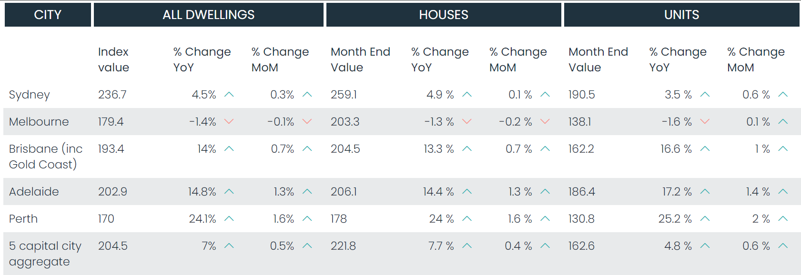
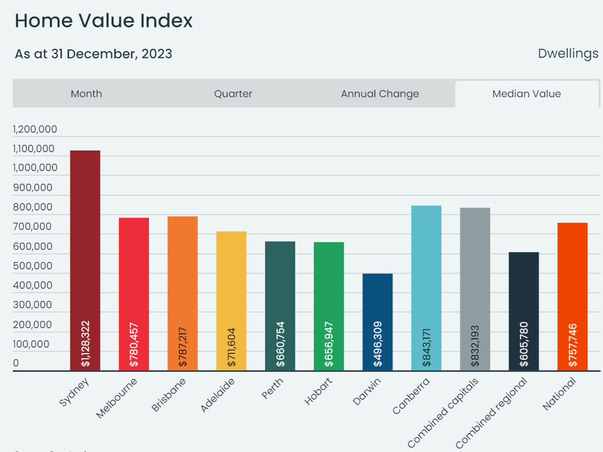
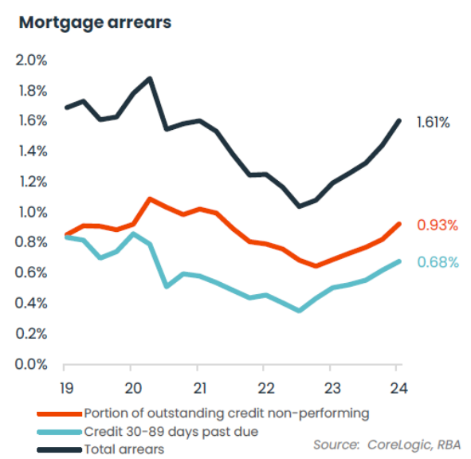

Navigating Australia’s Shifting Property Market: Trends, Challenges, and the Path Forward
Australia’s property market has been a topic of intense discussion, with prices continuing to rise despite economic headwinds. As of September 2024, while the national trend shows a slowing in price growth, there remains significant variation across different cities. This ongoing divergence reflects the complex interplay of factors such as population growth, migration, housing shortages, and fluctuating interest rates. At the same time, regulatory measures introduced to curb unsustainable growth have left their mark. In this blog, we’ll explore the key drivers behind these trends and consider what lies ahead for Australia’s property market in both the short and long term.
What’s Going on in the Australian Property Market?
As of September 2024, Australia’s national home prices continue to rise, though the pace of growth has slowed. Over the three months leading to July 2024, national home values increased by 1.7%, compared to around 3% during the same period last year. This slowdown reflects a shift in the housing market’s dynamics, as rising interest rates, economic factors, and regulatory changes take hold.
One key observation is the widening gap in capital growth across different cities. The range of growth between cities is now at its highest since 2006, a period marked by Australia’s mining boom. For example, while Perth experienced a 6% increase in property values over the quarter, Melbourne saw a 1% decline. This highlights a trend where more affordable cities—such as Perth, Brisbane, and Adelaide—are performing better, while traditionally expensive markets like Sydney and Melbourne are cooling off.

Interestingly, Brisbane has now overtaken Melbourne to become the second most expensive city in Australia in terms of median dwelling prices. As of 2024, Brisbane’s median house price is 2.5% higher than Melbourne’s, signaling a shift in market preferences toward more affordable, yet growing cities. In Adelaide, median house prices have skyrocketed by 40% between June 2020 and June 2023, making it less affordable in relation to local incomes, even though it remains a more affordable city nationally.

What Are the Long-Term Drivers of Home Prices in Australia?
Several factors have driven long-term home price increases in Australia, most notably:
- Australia has seen strong population growth, partly due to high levels of migration, especially from international students and workers.
- Since the mid-2010s, Australia has struggled with a chronic housing shortage, exacerbated by limited land availability, construction delays, and restrictive zoning laws.
- Historically low interest rates encouraged buyers to take out mortgages, increasing demand for homes. When interest rates were low, many Australians rushed to buy homes, leading to bidding wars and pushing prices up, even amid a housing shortage. The relationship between rising mortgage rates and housing prices is clear in recent years. Higher borrowing costs have significantly reduced the affordability of homes, contributing to a cooling housing market. Both economic conditions and monetary policy will continue to shape this dynamic moving forward.
Additionally, the uneven affordability across different regions is influencing internal migration, with people moving to more affordable cities like Perth and Adelaide, further straining the limited supply in those areas.
Is the Situation Similar to the Pre-GFC Housing Bubble?
While there are concerns about housing affordability, Australia’s situation differs from the pre-Global Financial Crisis (GFC) housing bubble. Since the GFC, Australia has implemented several prudent lending practices. Regulatory bodies like APRA have tightened lending standards, imposing caps on high-risk loans, including interest-only mortgages and investor lending. These regulations, combined with Responsible Lending Obligations, ensure that borrowers are carefully assessed before loans are approved, reducing the risk of a housing bubble.

Non-performing loans (loans at least 90 days overdue) have increased to 0.93% of all loans, which is slightly higher than at the onset of the pandemic (0.92%). Loans 30-89 days overdue represent 0.68% of loans, up from 0.35% in 2022, and this is the highest level since Q2 2020. The average variable interest rate on outstanding home loans rose from 2.86% in April 2022 to 6.39% in March 2024, significantly increasing monthly repayment burdens.
In addition, Australian banks are required to hold higher capital reserves to protect the financial system from shocks, further stabilising the market. As a result, even during economic downturns or when interest rates rise sharply, the housing market tends to remain relatively stable. For example, mortgage arrears currently sit at around 1.6%, indicating that most homeowners are still able to service their loans despite financial pressures.
What Would Happen If Unemployment Rose Sharply?
A sharp rise in unemployment could pose risks to the housing market, particularly in terms of mortgage defaults. If more people were unable to service their mortgages, there would likely be an increase in forced sales, leading to downward pressure on property prices. However, Australia’s current economic indicators suggest that a sharp rise in unemployment is unlikely. The unemployment rate has remained stable at around 4.2% as of mid-2024, and forecasts suggest only mild increases over the next year. The government and central bank are also carefully managing economic policies to avoid shocks that could lead to significant job losses.
Owner-Occupied Boom
The COVID-19 pandemic led to a boom in owner-occupied homes, driven by low interest rates, government stimulus packages, and a shift in preferences for larger living spaces due to remote work. As a result, demand for homes soared, particularly in outer suburbs and more affordable cities, which caused property prices to rise. This trend marked a significant shift from investor-driven growth to owner-occupier-driven growth, as more Australians sought to purchase homes to live in rather than rent out.
What to Expect?
In the short term, property prices are expected to continue rising at a slower rate nationally, but the degree of change will vary significantly between regions. Not all suburbs will see price increases, and some cities may experience stagnation or even declines. For instance, Melbourne could become more affordable, with house prices rising by only 1% in the last quarter. This slow growth could provide some relief for potential buyers in the city.
Fundamentally, most homeowners are reluctant to see their property values decline, as many Australians have taken on substantial debt to afford homeownership. This creates little incentive for policies that could drive down home prices. However, to address the affordability crisis and relieve pressure on the housing market, government reforms encouraging downsizing and increasing high-density housing will be crucial. Building more units through both public and private sector initiatives will help alleviate supply constraints.
One potential solution could involve reallocating resources from large-scale infrastructure projects to housing construction. For example, Australia currently faces a shortage of construction workers, which is slowing the pace of housing development. Redirecting labor to homebuilding could accelerate construction rates and help meet demand. Lower homeownership also puts additional pressure on the rental market, which has seen significant price hikes in recent years due to limited supply. Increasing housing stock will not only stabilise home prices but also ease rental market pressures, benefitting both buyers and renters in the long term.